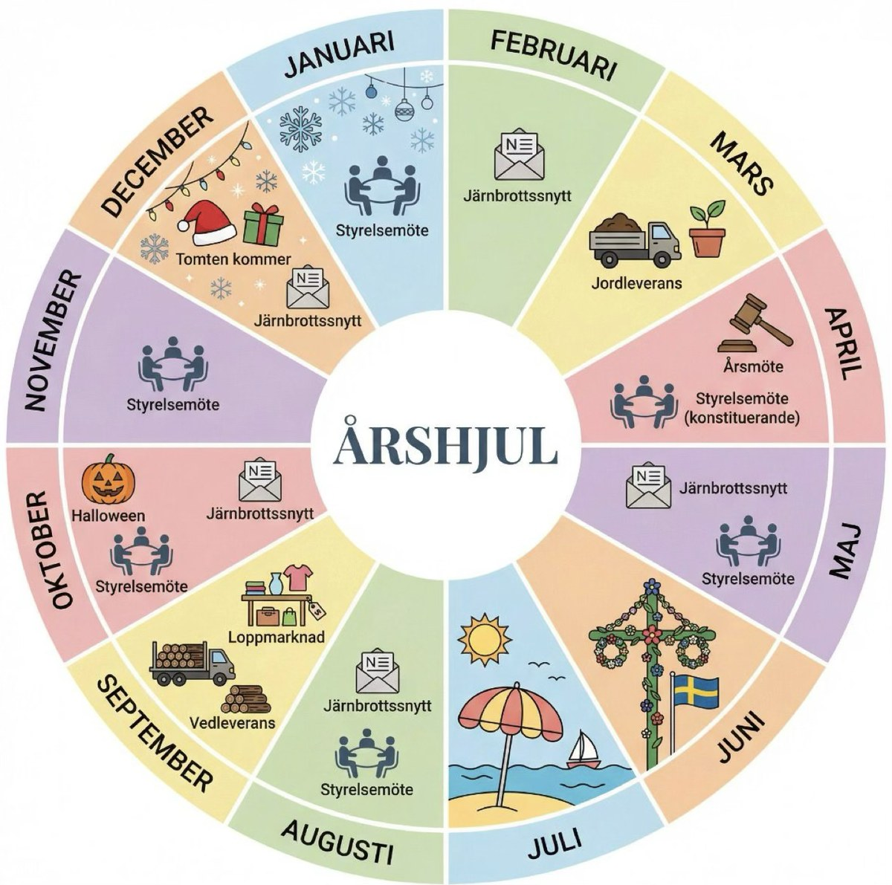

Järnbrott, Göteborg · sedan 1952
Femton minuter till havet, femton minuter till stan
Egnahemsföreningen finns till för oss i radhusen och villorna, och syftet med den är att bidra till gemenskap och trygghet i området.
Vi beställer planteringsjord ihop på våren och ved på hösten, vi håller igång loppisen, samordnar Halloween och ser till att tomten samlar in önskelistor i december.
Alla som äger eller bor i ett hus i Järnbrott är välkomna som medlemmar. Ju fler vi är desto mer kan vi göra tillsammans.
Året i Järnbrott

Det mesta i föreningen återkommer varje år. Jorden kommer i mars, årsmötet hålls i april, loppisen ligger första söndagen i september och veden levereras i oktober. Halloweenaktiviteten sker runt allhelgona och tomten kommer i december. Däremellan kommer Järnbrottsnytt i brevlådan fem gånger om året.
Styrelsen träffas ungefär varannan månad. Har du en fråga som borde upp på ett styrelsemöte hör du av dig, så tar vi den där. Vill du engagera dig finns det alltid plats för fler, antingen i styrelsen eller kring en enskild fråga.
På gång just nu
-
6sept
Områdesloppis
Sälj på din egen uppfart eller vid fotbollsplanen på Våglängdsgatan. Anmäl dig till loppiskartan senast 3 september, så kommer din adress med.
-
25sept
Sista dag att beställa ved
80-literssäckar med blandved, 100 kronor styck, för medlemmar. Du beställer genom att swisha och märka betalningen med ved och din adress.
-
oktv. 41–42
Veden levereras
Säckarna körs hem till din uppfart av Ågrenskas dagliga verksamhet.
-
31okt
Halloween i Järnbrott
Klockan 17.00–20.00
Barnen går runt i området, utspökade till något läskigt, och frågar om vi föredrar bus eller godis. Det brukar bli en rolig kväll.
Så funkar kvällen
Vill du locka dem till ditt hus? Pynta ordentligt eller ställ ut en lykta, då vet de godissugna små varelserna vart de ska.
Föräldrar: hjälp era små att förstå upplägget, så att de bara knackar på där de är välkomna.
-
6dec
Tomten kommer till Järnbrott
Söndag, klockan 17.00–18.00
Tomten kommer för att samla in alla barns och vuxnas önskelistor. Vi samlas på gräsplanen ovanför Mellanvågsgatan, mot åsen.
Så funkar besöket
Det bjuds på julstämning, pepparkakor och varm dryck för både barn och vuxna.
Vid 18.00 behöver tomten skynda vidare till nästa ställe, så kom gärna i tid.
Inget är inplanerat just nu. Årshjulet ovan visar vad som brukar hända under året, och nästa Järnbrottsnytt kommer med datumen.
Bli medlem
Medlemsavgiften är 200 kronor om året och ger dig tillgång till de gemensamma inköpen och till servisskadefonden, som ersätter en del av kostnaden om en vatten- eller avloppsledning på din tomt går sönder. Har du ingen egen servisledning betalar du 100 kronor.